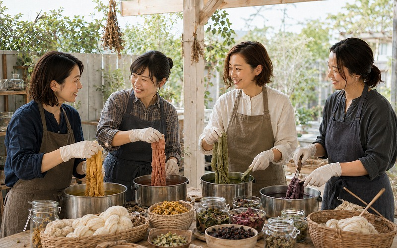
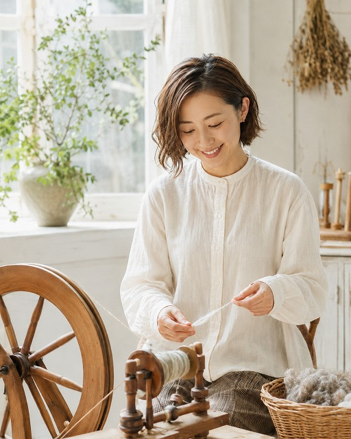
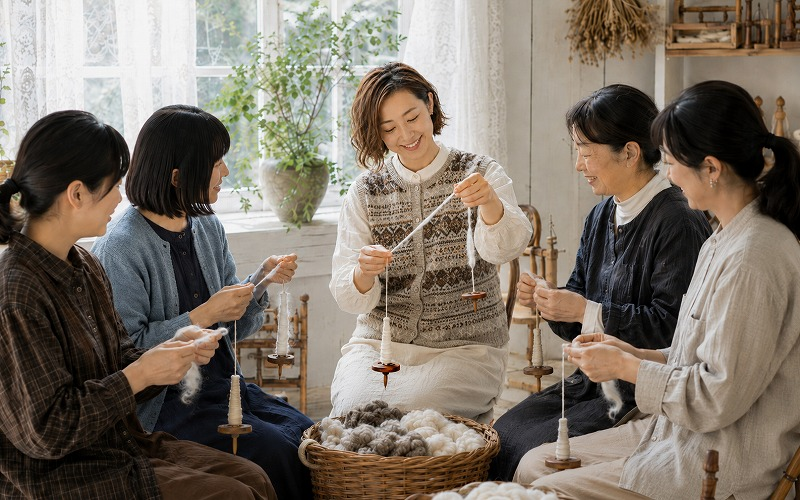

染色体験
草木や天然染料を使って、自分だけの色に糸を染める2時間のワークショップです。当日染めた糸はお持ち帰りいただけます。
- 料金
- ¥ 4,500（材料費込み）
- 定員
- 各回 4名まで
- 所要時間
- 約2時間
工房について
K&ito.の店主、ワークショップ、アクセスについてご案内します。

店主
糸と染料と、羊毛と。
Story
幼少期
祖母の膝元で編み棒を握ったのが、すべての始まりでした。棒針の動き、毛糸の感触、少しずつ形になっていく喜び。あの頃の記憶が、今も指先に宿っています。
高校時代
ホームステイ先のお母さんが、毎朝スピンドルで糸を紡いでいました。「やってみる？」と渡されたスピンドル。ぎこちなく、でも確かに糸になっていく羊毛に、言葉を失いました。あれが、糸紡ぎの原点です。
20代
編み物好きが高じて、「自分で色を作れたら」と草木染めを始めました。植物や鉱物が繊維に染み込んでいく瞬間の美しさに魅了され、気づけば染色が暮らしの中心に。
現在
染色から糸紡ぎへ、そして工房へ。「糸から始まる、ものがたり」をテーマに、手染め・手紡ぎ糸を中心とした小さな工房を開きました。一本の糸が誰かの作品になる瞬間を、これからも大切にしていきたいと思っています。
Workshop
染色と糸紡ぎの体験ワークショップを開催しています。道具・材料はすべてこちらでご用意します。

草木や天然染料を使って、自分だけの色に糸を染める2時間のワークショップです。当日染めた糸はお持ち帰りいただけます。

スピンドルを使って羊毛から糸を紡ぐ体験です。紡いだ糸はお持ち帰りいただけます。初めての方でも丁寧にご指導します。
開催スケジュール
お申し込みはお電話またはInstagramのDMにてご連絡ください。
定員に達し次第、受付を終了します。
Access
※ 駐車場はございません。公共交通機関をご利用ください。
※ ワークショップのご予約・在庫確認はInstagramのDMまたはお電話にてどうぞ。
Map